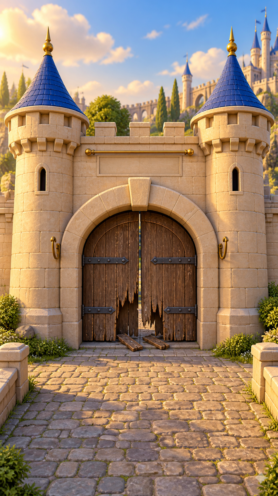
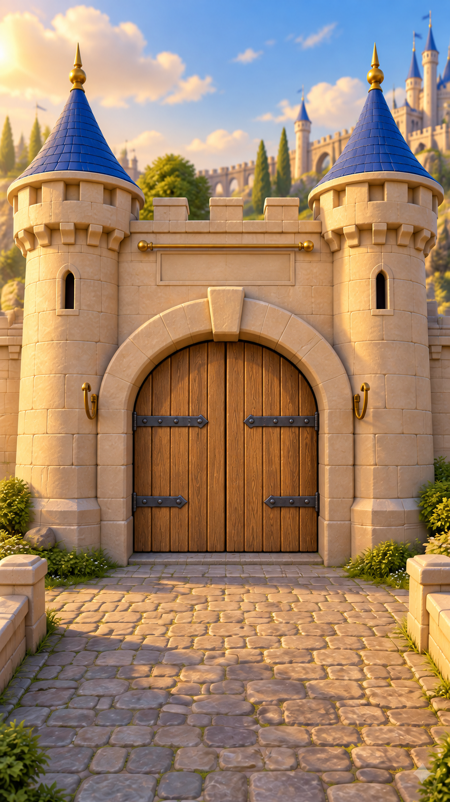
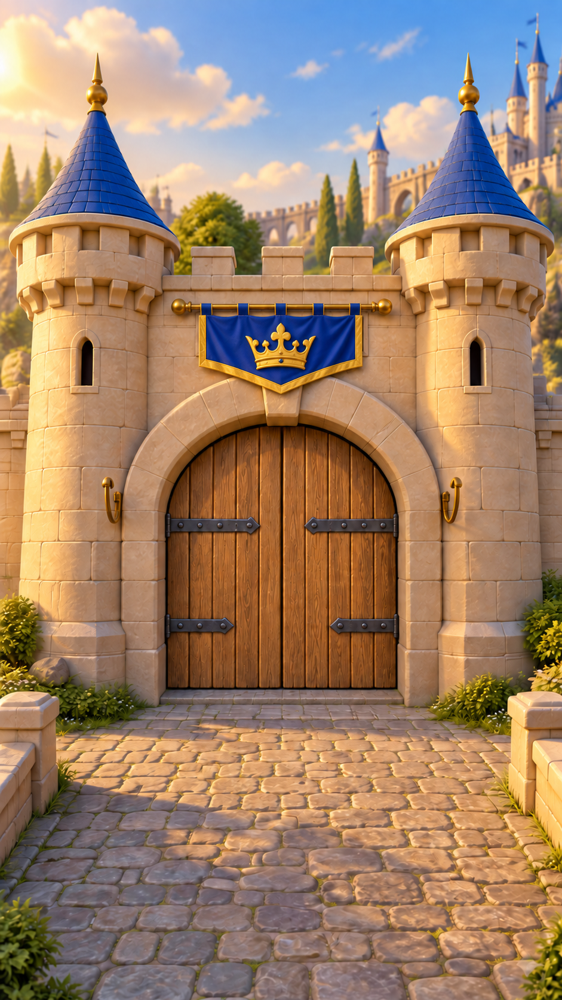
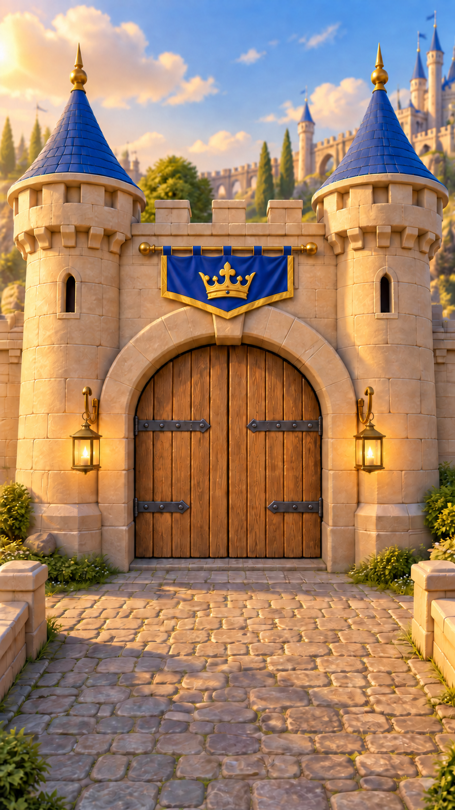

♛ KING LEO / ART ROOM
Area 01 · Preview v1The castle gates
A royal welcome,
one repair at a time.
Honey oak, sunlit sandstone, royal blue and warm brass. Archived gate artwork with four cumulative states. The older repair videos were removed on 12 September 2026.
01 / Generated artwork
The same gate. Restored.
The doorway, towers and camera stay consistent. Each state keeps the work completed before it.

00Broken gate
Rotted boards and loose timber.
The restoration begins here.


01Fix the timber
Fresh oak fills the original door.
Iron hinges stay in place.


02Hang the banner
A royal blue crown banner.
The repaired door stays complete.


03Hang the lights
Two glowing brass lanterns.
Timber and banner remain complete.

THE PALETTEWarm sandstoneHoney oakRoyal blueAntique goldLantern amber
Older videos removed
The repair clips and full-restoration preview were removed at the owner's request on 12 September 2026. The still-image gallery remains available.